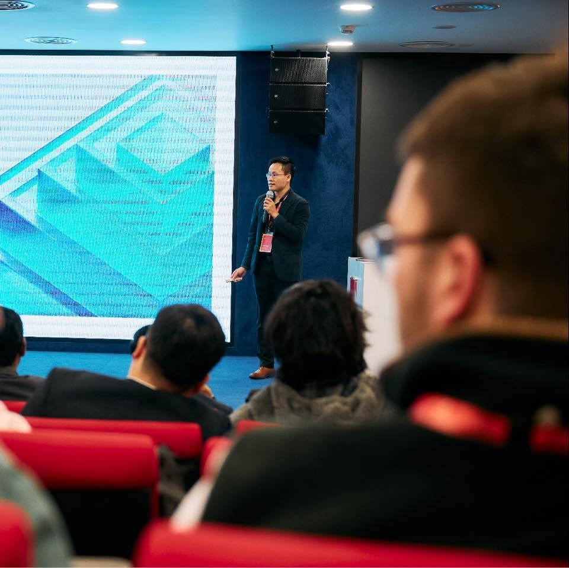

|
Duc Duong
Hi, I’m Duc. I am an engineer. My story starts in a small village just outside of Hanoi, Vietnam, but my passion for engineering has since taken me around the world. I’ve lived and worked in cities like Hanoi, Ho Chi Minh City, Toulouse, Paris, etc. I also worked for remote projects in Rome-Italia and Atlanta-USA, and I have traveled to over 20 countries across Asia and Europe.
I am currently the Country Software Delivery Leader for IBM in Vietnam. Since 2017, I’ve been fully immersed in the world of Data and AI, specializing in turning complex technical engineering into high-level business strategy.
Before taking on my current leadership role in 2026, I wore nearly every hat in the lifecycle of a tech project. From 2022 to 2025, I was IBM's Customer Success Manager & Architect for Data and AI, helping clients maximize value from watsonx, Cloud Pak for Data, and Red Hat OpenShift. My journey also includes hands-on experience as a Data-AI Engineer, Technical Trainer, Project Manager, and Deployment Strategist. Along the way, I’ve had the opportunity to work on massive-scale platforms like Airbus Skywise (powered by Palantir) and design solutions across major cloud environments including AWS, Azure, and Databricks.
At the moment, I’m focused on what’s next: Generative AI, Foundation Models, Large Language Models, and designing the architecture for the next generation of scalable AI systems.
I’m always open to connecting with fellow tech enthusiasts and leaders. Reach out to me via the channels below!
Email /
Resume /
LinkedIn /
Github /
Medium /
X
|

|
{kind=link}